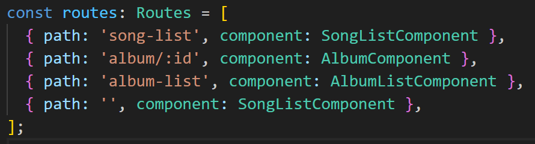

The front-end application is created using Angular. Angular was chosen for this project because it has robust Single-Page Application (SPA) capabilities. An SPA dynamically rewrites the current web page with new data from the web server, in contrast to the traditional way of the browser loading entire new pages which ultimately provides a smoother user experience.
Angular's routing module helps in handling navigation from one view to another while keeping the application within a single page. As the user interacts with the application, Angular changes the browser's URL dynamically, but the page itself does not reload, thus maintaining a SPA's behavior. This project consists of 3 routes (excluding empty path).
Routes: Empty path defaults to SongListComponent
I wanted to take advantage of Angular’s component-based architecture. In Angular, Components are the fundamental building blocks for creating user interfaces. A component consists of 3 main parts:
• A TypeScript Class: defines the component’s logic, properties, methods, and interactions with services.
• HTML Template: This defines the component’s visual representation using HTML.
• CSS styles: Specific to the component to customize its appearance.
Key Advantages of Angular Components:
• Reusability: Components can be used multiple times throughout your application, promoting a "write once, use anywhere" philosophy. This reduces code duplication. In this project for example, a list of songs is a list of “Song” components.
• Modularity: Components encapsulate logic, data, and presentation, making the codebase more organized, maintainable, and easier to test.
• Data Binding: Components can bind data from their TypeScript logic to the template and vice versa, enabling dynamic updates of the user interface.
Angular Services
Angular services, as TypeScript classes, provide a centralized way to manage functionality and data shared across components within an application. This architecture is ideal for maintaining consistent state, interacting with external APIs, or performing calculations.
This project creates and leverages two Angular Services:
• The Music Service facilitates communication with a custom API, enabling efficient retrieval of data and media resources.
• The Audio Processing Service manages the playback state of songs (playing/paused) and utilizes the Web Audio API to apply audio effects. I didn’t create a microservice to avoid latency issues.